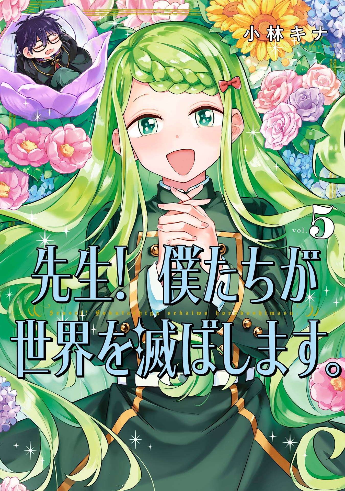
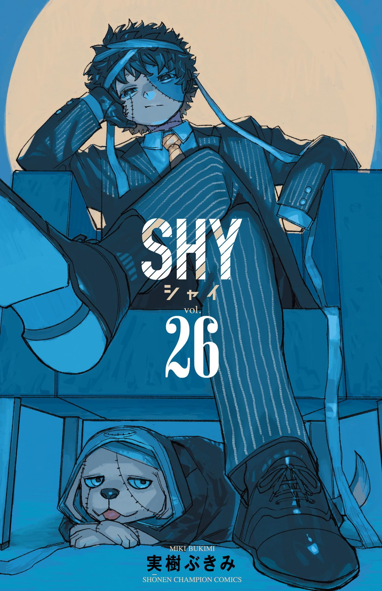
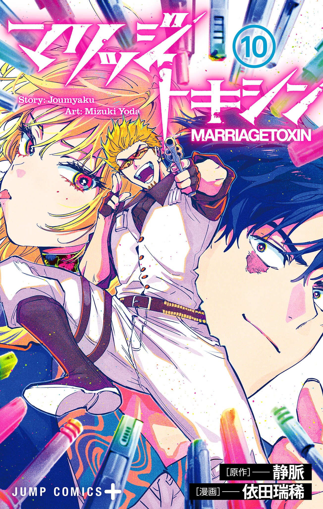
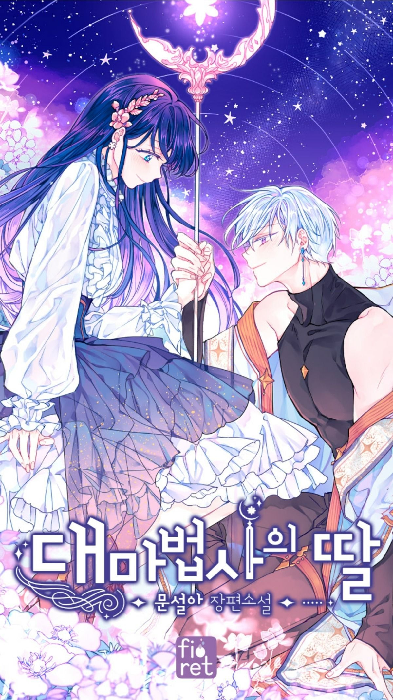
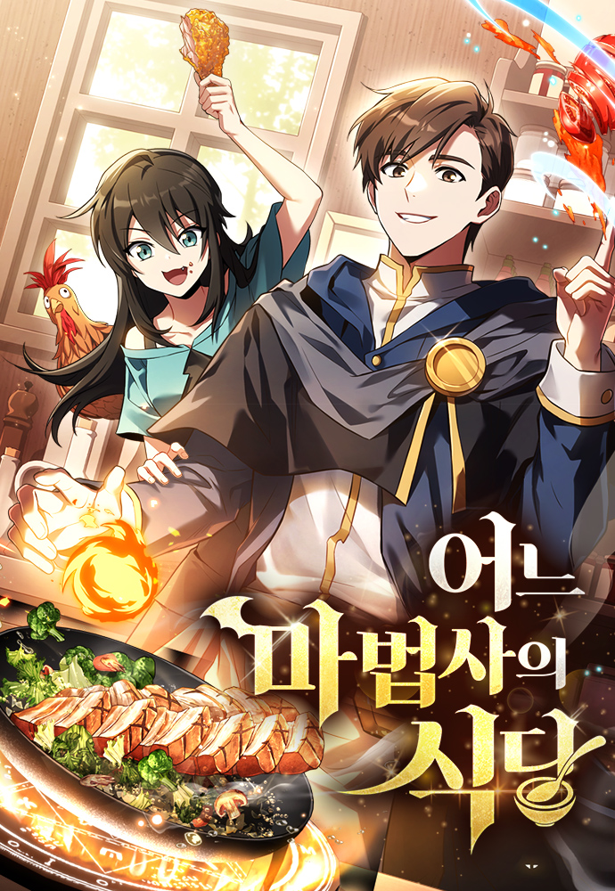
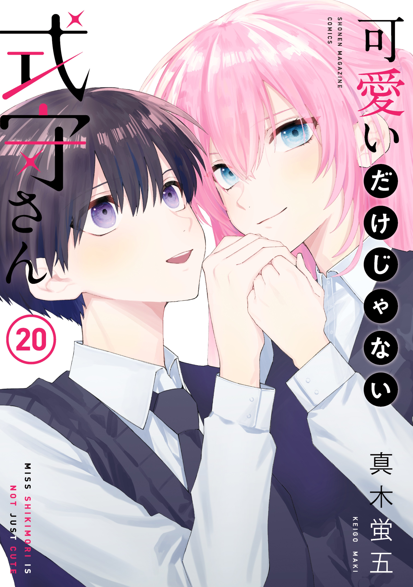

-

Sakamoto Days
サカモト デイズ -

RuriDragon
ルリドラゴン -

Dandadan
ダンダダン -

Teacher, we will destroy the world!
先生！ 僕たちが世界を滅ぼします。 -

Kindergarten WARS
ダンダダン -

Mission: Yozakura Family
夜桜さんちの大作戦 -

The Fragrant Flower Blooms with Dignity
薫る花は凛と咲く -

Ending Maker
엔딩 메이커 -

I Only Want to Beat You, Oh Roji
오로지 너를 이기고 싶어 -

Will You Marry Me Again If You Are Reborn?
生まれ変わってもまた、私と結婚してくれますか -

Can You Fall in Love With the Skeleton?
骸骨と恋はできるのか？ -

Wotakoi: Love Is Hard for Otaku
ヲタクに恋は難しい -

Love Tutorial
恋人チュートリアル -

My Girlfriend Is the Best!
僕の彼女は最高です！ -

SHY
シャイ -

MARRIAGETOXIN
マリッジトキシン -

The Archmage's Daughter
대마법사의 딸 -

I Became Friends with the Second Cutest Girl in My Class!
クラスで２番目に可愛い女の子と友だちになった -

The Archmage's Restaurant
어느 마법사의 식당 -
Blue Orchestra
青のオーケストラ -

Shikimori's Not Just a Cutie
可愛いだけじゃない式守さん